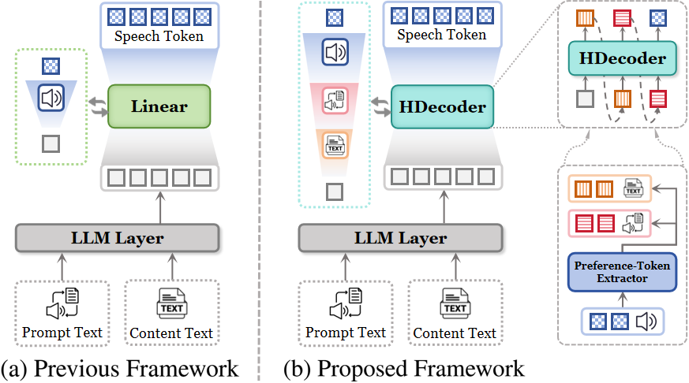
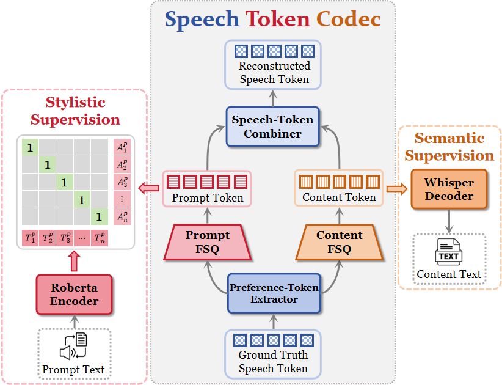
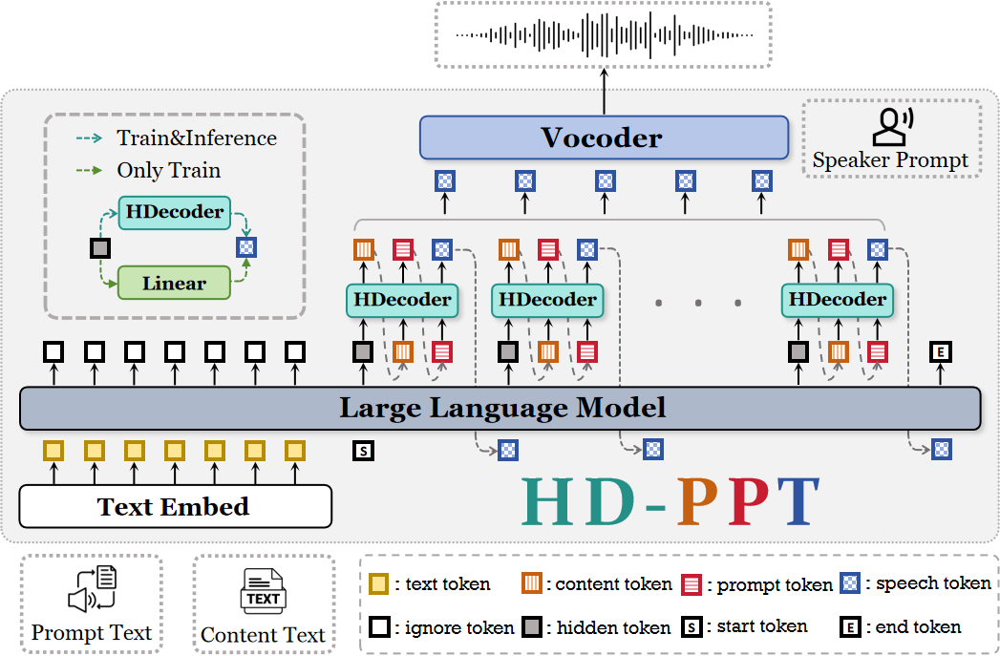

HD-PPT: Hierarchical Decoding of Content- and Prompt-Preference Tokens
for instruction-based TTS
for instruction-based TTS
Abstract
Large Language Model (LLM)-based Text-To-speech (TTS) models already reached a high degree of naturalness. However, the precision control of TTS inference is still challenging. Although instruction-based Text-to-Speech (Instruct-TTS) models are proposed, these models still lack fine-grained control due to the modality gap between single-level text instructions and multilevel speech tokens. To address this question, we propose HD-PPT, a framework that transforms speech synthesis into a structured, hierarchical task. To enable fine-grained control, we introduce a novel speech codec to extract distinct prompt-preference and content-preference tokens from the complex speech tokens, supervised by automatic speech recognition (ASR) and cross-lingual audio-text pre-training (CLAP) objectives. To bridge the modality gap of these tokens, we proposed hierarchical decoding strategy, where the LLM generates tokens in a structured order: first semantic, then fine-grained style, and finally complete acoustic representation. Extensive experiments demonstrate that this hierarchical paradigm significantly improves instruction adherence and achieves state-of-the-art naturalness, validating our approach for precise and controllable speech synthesis.
Model Architecture



Comparative Experiment
To demonstrate the effectiveness of our proposed approach,
we conducted a comparative study of several popular retrieval methods on HD-PPT.
The methods we compared include:
(1) PromptStyle.
(2) PromptTTS.
(3) CosyVoice.
(4) CosyVoice2.
(5) EmoVoice-PP.
Sample 1
Prompt Text: With a composed demeanor, she spoke slowly.
Content Text: "Haven't they any children?" asked Constance indifferently.
| Groundtruth | Proposed | PromptStyle | PromptTTS | CosyVoice | CosyVoice2 | EmoVoice-PP |
|---|---|---|---|---|---|---|
Sample 2
Prompt Text: Speaking at a regular pace, the mad male speaker employs a high-pitched voice with moderate energy.
Content Text: Over them swooped the eagles.
| Groundtruth | Proposed | PromptStyle | PromptTTS | CosyVoice | CosyVoice2 | EmoVoice-PP |
|---|---|---|---|---|---|---|
Sample 3
Prompt Text: Emphasizing bliss that resonates in harmonic, cheerful tones.
Content Text: When the world sings in harmony like a well-tuned orchestra embracing the air.
| Groundtruth | Proposed | PromptStyle | PromptTTS | CosyVoice | CosyVoice2 | EmoVoice-PP |
|---|---|---|---|---|---|---|
Sample 4
Prompt Text: Depicting the ache of isolation with suppressed, trembling sadness.
Content Text: Nobody looks up anymore; they just pass by like you're not even there.
| Groundtruth | Proposed | PromptStyle | PromptTTS | CosyVoice | CosyVoice2 | EmoVoice-PP |
|---|---|---|---|---|---|---|
Sample 5
Prompt Text: Echoing with an involuntary awe and the shock of unexpected beauty.
Content Text: A flock of birds erupted from the tree, a sudden shadow against the sky.
| Groundtruth | Proposed | PromptStyle | PromptTTS | CosyVoice | CosyVoice2 | EmoVoice |
|---|---|---|---|---|---|---|
Sample 6
Prompt Text: Imparting an anxious atmosphere with quivering undertones of dread.
Content Text: Shadows crawled across the walls, growing bolder as the night deepened.
| Groundtruth | Proposed | PromptStyle | PromptTTS | CosyVoice | CosyVoice2 | EmoVoice-PP |
|---|---|---|---|---|---|---|
Ablation Study
To demonstrate the effectiveness of our proposed approach, we conducted an ablation study on HD-PPT.
We conducted tests on the following configurations:
(1) w/o Content-Pref.: removing prompt-preference tokens.
(2) w/o Prompt-Pref.: removing prompt-preference tokens.
(3) w/o Dual-Pref.: bypassing both preference tokens.
(4) w/o Instruct Text: generating speech without the style prompt.
(5) Parallel: all tokens are decoded simultaneously from the LLM's hidden states.
(6) Single-step: only speech tokens are decoded from the LLM's hidden states.
Sample 1
Prompt Text: Communicating strong personal offense and aversion with incredulous emphasis.
Content Text: I can't believe you actually ate that DISGUSTING thing!
| Groundtruth | Proposed | w/o Content-Pref. | w/o Prompt-Pref. | w/o Dual-Pref. | w/o Instruct Text | Parallel | Single-step |
|---|---|---|---|---|---|---|---|
Sample 2
Prompt Text: With a hint of high energy, the man engages in speech at a regular pace with a normal pitch.
Content Text: "What in?" asked the shaggy man.
| Groundtruth | Proposed | w/o Content-Pref. | w/o Prompt-Pref. | w/o Dual-Pref. | w/o Instruct Text | Parallel | Single-step |
|---|---|---|---|---|---|---|---|
Sample 3
Prompt Text: Conveying a repeated deception met with growing frustration and disbelief.
Content Text: He says he'll fix it, but the LIES are just louder!
| Groundtruth | Proposed | w/o Content-Pref. | w/o Prompt-Pref. | w/o Dual-Pref. | w/o Instruct Text | Parallel | Single-step |
|---|---|---|---|---|---|---|---|
Sample 4
Prompt Text: Cultivating a melancholic mood soaked with the weight of distant memories.
Content Text: It wasn't the rain that made him pause; it was the memory it unearthed.
| Groundtruth | Proposed | w/o Content-Pref. | w/o Prompt-Pref. | w/o Dual-Pref. | w/o Instruct Text | Parallel | Single-step |
|---|---|---|---|---|---|---|---|